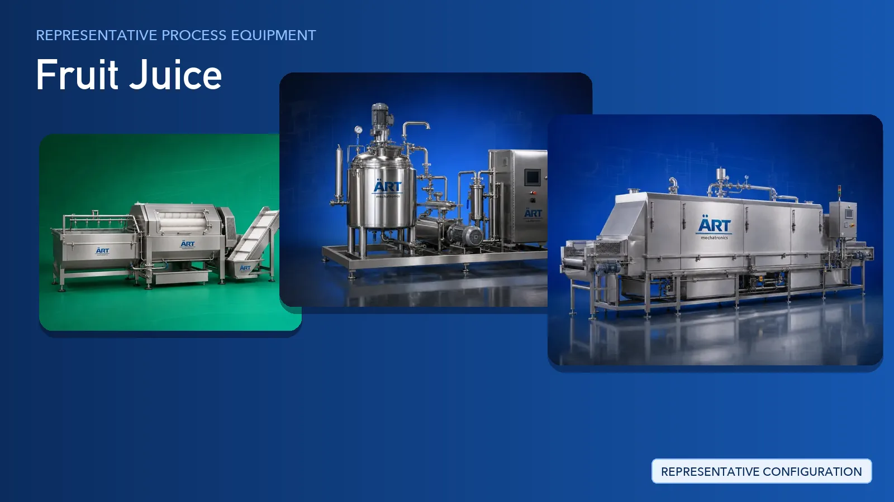

Fruit Juice Plant & Machinery Solutions (Pulp, Concentrate & Ready-to-Drink Lines)
Fruit juice processing converts fresh fruit into pulp, concentrate, nectar and ready-to-drink beverages.

About Fruit Juice processing
ART Mechatronics provides complete turnkey solutions for fruit juice processing plants, covering fruit intake and washing, sorting and grading, crushing and preparation, blending and holding tanks, homogenising, pasteurising and cooling, and complete filling and packaging lines. Our solutions are designed for hygienic food-grade operation, gentle product handling and consistent output for domestic and export markets.
Complete Fruit Juice Process Flow
Incoming fruit is unloaded, fed into the line and washed to remove field soil and surface contaminants.
Ensures hygiene at the very start of the line.
Damaged, unripe and off-colour fruit is removed and the balance is graded before processing.
Protects the flavour and colour of the finished juice.
Fruit is peeled, de-stemmed and de-seeded as the variety requires, then reduced in size.
Prepares the fruit for:
- Juice extraction
- Pulp and puree recovery
Crushed fruit is worked into pulp and the juice fraction is separated and screened.
Separates juice from skins, fibre and seeds.
Juice, pulp, water and permitted additives are blended into the finished recipe and homogenised.
Ensures:
- Uniform blend
- Stable product body
- Consistent taste across batches
The blended juice is heat treated and then cooled before it reaches the filler.
Supports product safety and shelf life.
Finished juice is filled, sealed, labelled, packed and moved into cold storage or dispatch.
Suitable for retail bottles, pouches and bulk aseptic-style formats.
Support systems supplied alongside the juice line:
- Steam Generator and Boiler for process heating
- Chiller and Cooling Tower for product and utility cooling
- Air Handling Unit for clean processing and filling areas
- Wet Scrubber and Fume Extraction System where cooking and evaporation vapours are generated
Machinery Required for Fruit Juice Plant
Turnkey Fruit Juice Plant Solutions
ART Mechatronics offers complete turnkey solutions for fruit juice processing plants, including:
- Process design & plant layout
- Fruit intake, washing and sorting systems
- Crushing and preparation systems
- Blending, holding and homogenising systems
- Pasteurising and cooling systems
- Automation & control panels
- Filling and packaging line integration
- Cold storage and cold chain support
- Installation & commissioning
- After-sales support
We customize solutions based on:
- Fruit type and seasonality
- Product form (pulp, concentrate, nectar, ready-to-drink)
- Production capacity
- Packaging format
Why Choose ART Mechatronics
- Experience in fruit handling and liquid processing systems
- Gentle preparation and size reduction to protect product quality
- Hygienic food-grade tank, piping and contact-part design
- Integrated pasteurising and cooling systems
- Automated control with recipe management
- Complete filling and packaging line integration
- Global export capability
Machinery in a Fruit Juice plant
Where it's used
Get pricing & specs for the Fruit Juice plant
Share the product, target capacity, current process and plant location. These details help our engineers discuss the right machine or line configuration.
One partner, from design to start-up
ART Mechatronics designs, manufactures, installs and commissions your Fruit Juice plant solution with regional presence in India, UAE and Thailand.